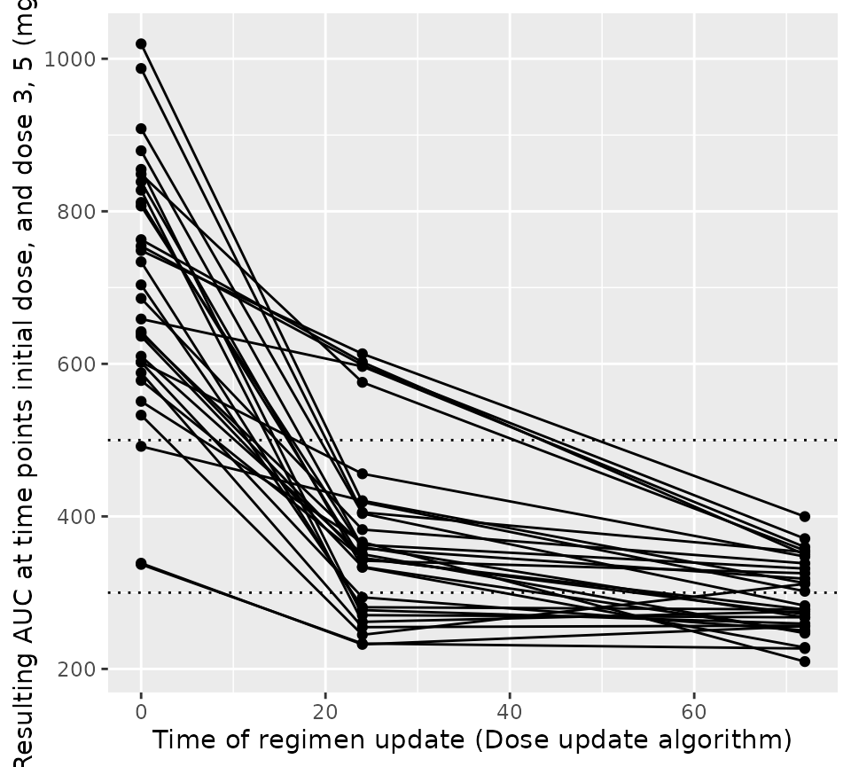

Time-varying exposure targets (vancomycin)
vancomycin_timevarying_targets.RmdIn this vignette, we will demonstrate the following tools:
- using {mipdtrial} to simulate a trial, with the trial design specified using R code.
- using timevarying exposure targets in the trial simulations. This is not so relevant for vancomycin, but we’ll just use that here as an example drug.
library(mipdtrial)
library(dplyr) # for easier data manipulation
#>
#> Attaching package: 'dplyr'
#> The following objects are masked from 'package:stats':
#>
#> filter, lag
#> The following objects are masked from 'package:base':
#>
#> intersect, setdiff, setequal, union
library(tidyr)
library(ggplot2) # for plotting our results1. Define the trial design
This simulated trial will have two samples, with a peak and trough collected in dose 1 and 3.
tdm_design <- create_sampling_design(
offset = c(1, -1, 1, -1), # sample 1-hour before true trough, and at peak+1hr
when = c("peak", "trough", "peak", "trough"),
at = c(1, 1, 3, 3),
anchor = "dose"
)We assume that we can update the dose amount at dose 3 and 7, and aim
for an AUC24 of 500 mg*h/L and 300 by dose 5 and 10, respectively.
target_design <- create_target_design(
targettype = "auc24",
targetvalue = c(500, 300),
at = c(5, 10),
anchor = "dose"
)
dose_update_design <- create_regimen_update_design(
at = c(3, 7),
anchor = "dose",
update_type = "dose",
dose_optimization_method = map_adjust_dose # fixed interval, optimize dose
)We will be using the Thomson (2009) model for simulation and estimation:
model_design <- create_model_design(lib = "pkvancothomson")We will start with a dose estimated to attain the target exposure metrics based on population PK parameters, assuming a 12-hour interval.
initial_method <- create_initial_regimen_design(
method = model_based_starting_dose,
regimen = list(
interval = 12,
type = "infusion",
t_inf = 1,
n = 24
),
settings = list(
auc_comp = 3,
dose_resolution = 250,
dose_grid = c(250, 5000, 250)
)
)Now we can combine these design choices into a single trial design:
design <- create_trial_design(
sampling_design = tdm_design,
target_design = target_design,
regimen_update_design = dose_update_design, # arm 1
initial_regimen_design = initial_method,
sim_design = model_design, est_design = model_design
)2. Create a set of digital patient covariates
For this example, we will randomly generate a set of weights and
creatinine clearances (CRCLs) for our synthetic data set. See
sampling_timing() vignette for a longer description.
set.seed(15)
dat <- data.frame(
ID = 1:30,
weight = rnorm(30, 90, 25), # kg, normally distributed
crcl = exp(rnorm(30, log(6), log(1.6))) # L/hr, log-normally distributed
)
dat$CL_HEMO <- 0 # required covariate for our modelWe also need to link the covariates in our data set to the covariates expected in the model:
-
To check which covariates are required for your model use
PKPDsim::get_model_covariates():PKPDsim::get_model_covariates(model_design$model) #> [1] "WT" "CRCL" "CL_HEMO" -
To check which covariates are in your data set use
colnames():colnames(dat) #> [1] "ID" "weight" "crcl" "CL_HEMO"
cov_map <- c(
WT = "weight",
CRCL = "crcl",
CL_HEMO = "CL_HEMO"
)4. Simulate a trial!
Patients will get a model-based dose (using population PK parameters), and then we will adjust the dose based on the MAP Bayesian fit made using the collected samples, first to target an AUC of 500, and then later targeting an AUC of 300.
Individual PK parameters will be randomly generated based on the interindividual variability described in the model, and residual variability will be added to each sample collected using the error model described in the model.
covs <- create_cov_object(
dat,
mapping = cov_map
)
model_based_starting_dose(
design = design,
covariates = covs,
cov_mapping = cov_mapping
)
#> t type amt t_inf
#> 1 0 infusion 1500 1
#> 2 12 infusion 1500 1
#> 3 24 infusion 1500 1
#> 4 36 infusion 1500 1
#> 5 48 infusion 1500 1
#> 6 60 infusion 1500 1
#> 7 72 infusion 1500 1
#> 8 84 infusion 1500 1
#> 9 96 infusion 1500 1
#> 10 108 infusion 1500 1
res <- run_trial(
data = dat,
design = design,
cov_mapping = cov_map,
progress = FALSE,
seed = 15
)
#> ℹ Starting simulations in 1 threads
#> ℹ Post-processing results5. Analyze results
Let’s see how well that worked. In the figure below we plot the steady state AUC that is attained using the regimen updated at the time shown on the x-axis. You would expect over time the steady state AUC to approach the middle of the range more closely, as more TDM is available to optimize the dose. Since we’re keeping the interval fixed, each patient will have the same dose update times on the x-axis.
ggplot(res$dose_updates) +
aes(x = t, y = auc_before_update, group = id) +
geom_hline(yintercept = c(300, 500), linetype = "dotted") +
geom_line() +
geom_point() +
xlab("Time of regimen update (Dose update algorithm)") +
ylab("Resulting AUC at time points initial dose, and dose 3, 5 (mg*h/L)")